2023 National 5 Computing Science marking instructions
Source: Scottish Qualifications Authority (SQA) / Qualifications Scotland. This is a StemInteract HTML companion, not an official HTML edition. Selectable text is supplied alongside original page images. Use the images or original PDF for equations, powers, fractions, vector notation, tables and diagrams; text extraction cannot fully preserve mathematical layout.
Jump to a question
PDF page 1
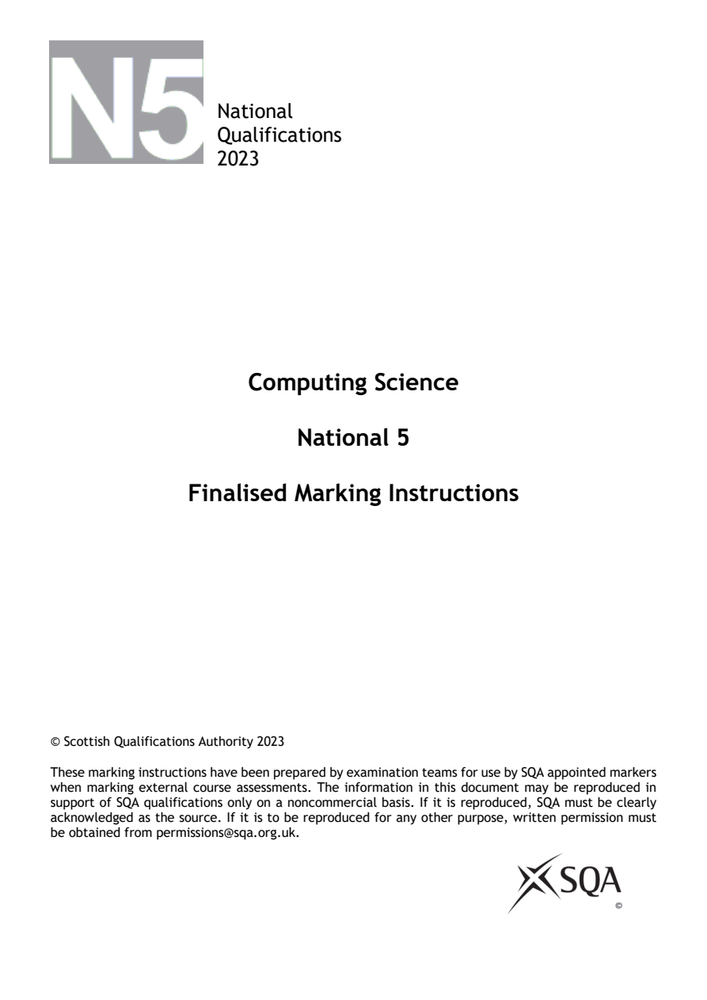
Selectable page text
National
Qualifications
2023
Computing Science
National 5
Finalised Marking Instructions
© Scottish Qualifications Authority 2023
These marking instructions have been prepared by examination teams for use by SQA appointed markers
when marking external course assessments. The information in this document may be reproduced in
support of SQA qualifications only on a noncommercial basis. If it is reproduced, SQA must be clearly
acknowledged as the source. If it is to be reproduced for any other purpose, written permission must
be obtained from permissions@sqa.org.uk.PDF page 2
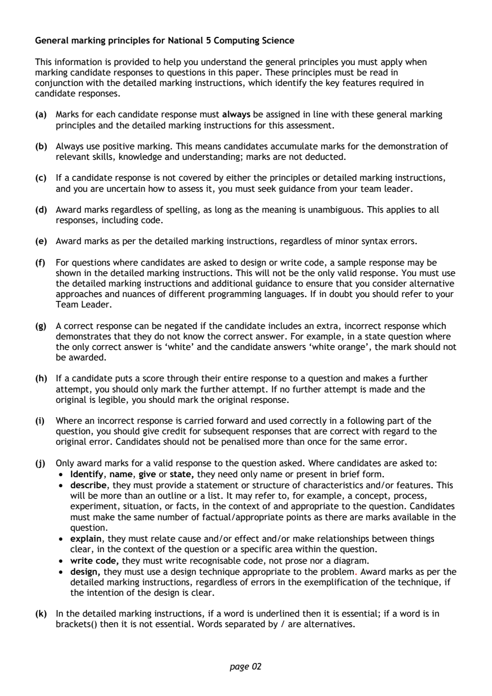
Selectable page text
General marking principles for National 5 Computing Science
This information is provided to help you understand the general principles you must apply when
marking candidate responses to questions in this paper. These principles must be read in
conjunction with the detailed marking instructions, which identify the key features required in
candidate responses.
(a) Marks for each candidate response must always be assigned in line with these general marking
principles and the detailed marking instructions for this assessment.
(b) Always use positive marking. This means candidates accumulate marks for the demonstration of
relevant skills, knowledge and understanding; marks are not deducted.
(c) If a candidate response is not covered by either the principles or detailed marking instructions,
and you are uncertain how to assess it, you must seek guidance from your team leader.
(d) Award marks regardless of spelling, as long as the meaning is unambiguous. This applies to all
responses, including code.
(e) Award marks as per the detailed marking instructions, regardless of minor syntax errors.
(f) For questions where candidates are asked to design or write code, a sample response may be
shown in the detailed marking instructions. This will not be the only valid response. You must use
the detailed marking instructions and additional guidance to ensure that you consider alternative
approaches and nuances of different programming languages. If in doubt you should refer to your
Team Leader.
(g) A correct response can be negated if the candidate includes an extra, incorrect response which
demonstrates that they do not know the correct answer. For example, in a state question where
the only correct answer is ‘white’ and the candidate answers ‘white orange’, the mark should not
be awarded.
(h) If a candidate puts a score through their entire response to a question and makes a further
attempt, you should only mark the further attempt. If no further attempt is made and the
original is legible, you should mark the original response.
(i) Where an incorrect response is carried forward and used correctly in a following part of the
question, you should give credit for subsequent responses that are correct with regard to the
original error. Candidates should not be penalised more than once for the same error.
(j) Only award marks for a valid response to the question asked. Where candidates are asked to:
• Identify, name, give or state, they need only name or present in brief form.
• describe, they must provide a statement or structure of characteristics and/or features. This
will be more than an outline or a list. It may refer to, for example, a concept, process,
experiment, situation, or facts, in the context of and appropriate to the question. Candidates
must make the same number of factual/appropriate points as there are marks available in the
question.
• explain, they must relate cause and/or effect and/or make relationships between things
clear, in the context of the question or a specific area within the question.
• write code, they must write recognisable code, not prose nor a diagram.
• design, they must use a design technique appropriate to the problem. Award marks as per the
detailed marking instructions, regardless of errors in the exemplification of the technique, if
the intention of the design is clear.
(k) In the detailed marking instructions, if a word is underlined then it is essential; if a word is in
brackets() then it is not essential. Words separated by / are alternatives.
page 02PDF page 3
Question 1Question 2Question 3Question 4Question 5Question 6Question 7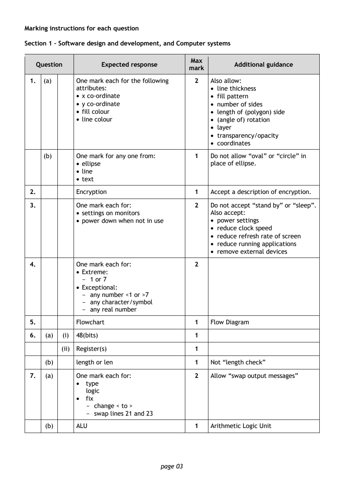
Selectable page text
Marking instructions for each question
Section 1 – Software design and development, and Computer systems
Max
Question Expected response Additional guidance
mark
1. (a) One mark each for the following 2 Also allow:
attributes: • line thickness
• x co-ordinate • fill pattern
• y co-ordinate • number of sides
• fill colour • length of (polygon) side
• li ne colour • (angle of) rotation
• layer
• transparency/opacity
• coordinates
(b) One mark for any one from: 1 Do not allow “oval” or “circle” in
• ellipse place of ellipse.
• line
• text
2. Encryption 1 Accept a description of encryption.
3. One mark each for: 2 Do not accept “stand by” or “sleep”.
• settings on monitors Also accept:
• power down when not in use • power settings
• reduce clock speed
• reduce refresh rate of screen
• reduce running applications
• remove external devices
4. One mark each for: 2
• Extreme:
1 or 7
-
• Exceptional:
any number <1 or >7
-
any character/symbol
-
any real number
-
5. Flowchart 1 Flow Diagram
6. (a) (i) 48(bits) 1
(ii) Register(s) 1
(b) length or len 1 Not “length check”
7. (a) One mark each for: 2 Allow “swap output messages”
• type
logic
• fix
change < to >
-
swap lines 21 and 23
-
(b) ALU 1 Arithmetic Logic Unit
page 03PDF page 4
Question 8Question 9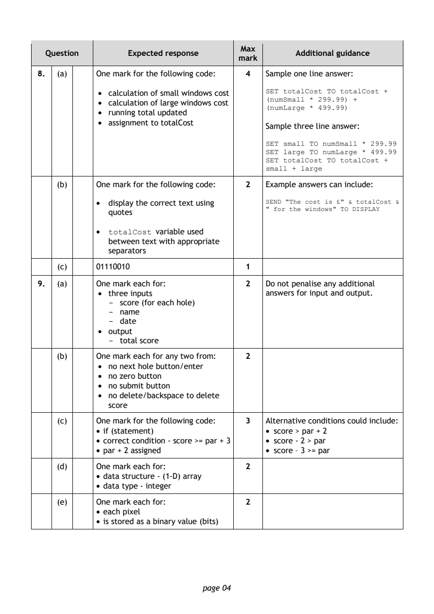
Selectable page text
Max
Question Expected response Additional guidance
mark
8. (a) One mark for the following code: 4 Sample one line answer:
• calculation of small windows cost SET totalCost TO totalCost +
• calculation of large windows cost (numSmall * 299.99) +
• running total updated (numLarge * 499.99)
• assignment to totalCost
Sample three line answer:
SET small TO numSmall * 299.99
SET large TO numLarge * 499.99
SET totalCost TO totalCost +
small + large
(b) One mark for the following code: 2 Example answers can include:
• display the correct text using SEND "The cost is £" & totalCost &
quotes " for the windows" TO DISPLAY
• variable used
totalCost
between text with appropriate
separators
(c) 01110010 1
9. (a) One mark each for: 2 Do not penalise any additional
• three inputs answers for input and output.
score (for each hole)
-
name
-
date
-
• output
total score
-
(b) One mark each for any two from: 2
• no next hole button/enter
• no zero button
• no submit button
• no delete/backspace to delete
score
(c) One mark for the following code: 3 Alternative conditions could include:
• if (statement) • score > par + 2
• correct condition - score >= par + 3 • score - 2 > par
• par + 2 assigned • score – 3 >= par
(d) One mark each for: 2
• data structure - (1-D) array
• data type - integer
(e) One mark each for: 2
• each pixel
• is stored as a binary value (bits)
page 04PDF page 5
Question 10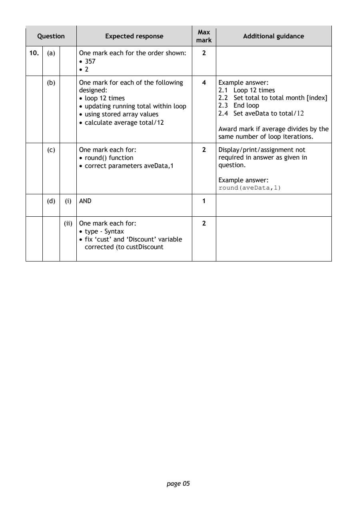
Selectable page text
Max
Question Expected response Additional guidance
mark
10. (a) One mark each for the order shown: 2
• 357
• 2
(b) One mark for each of the following 4 Example answer:
designed: 2.1 Loop 12 times
• loop 12 times 2.2 Set total to total month [index]
• updating running total within loop 2.3 End loop
• using stored array values 2.4 Set aveData to total/12
• calculate average total/12
Award mark if average divides by the
same number of loop iterations.
(c) One mark each for: 2 Display/print/assignment not
• round() function required in answer as given in
• correct parameters aveData,1 question.
Example answer:
round(aveData,1)
(d) (i) AND 1
(ii) One mark each for: 2
• type - Syntax
• fix ‘cust’ and ‘Discount’ variable
corrected (to custDiscount
page 05PDF page 6
Question 11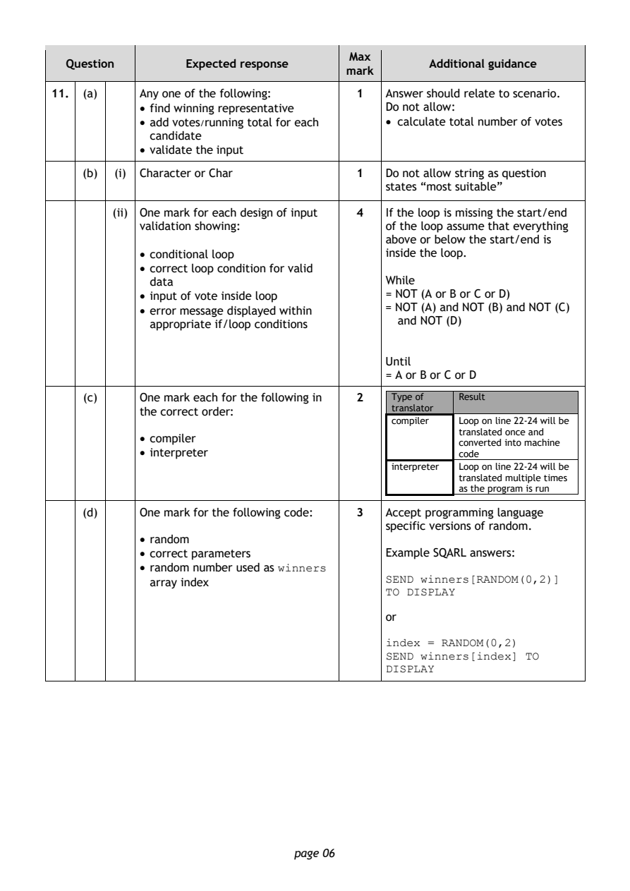
Selectable page text
Max
Question Expected response Additional guidance
mark
11. (a) Any one of the following: 1 Answer should relate to scenario.
• find winning representative Do not allow:
• add votes/running total for each • calculate total number of votes
candidate
• valid ate the input
(b) (i) Character or Char 1 Do not allow string as question
states “most suitable”
(ii) One mark for each design of input 4 If the loop is missing the start/end
validation showing: of the loop assume that everything
above or below the start/end is
• conditional loop inside the loop.
• correct loop condition for valid
data While
• input of vote inside loop = NOT (A or B or C or D)
• error message displayed within = NOT (A) and NOT (B) and NOT (C)
appropriate if/loop conditions and NOT (D)
Until
= A or B or C or D
(c) One mark each for the following in 2 Type of Result
the correct order: translator
compiler Loop on line 22-24 will be
translated once and
• compiler
converted into machine
• interpreter code
interpreter Loop on line 22-24 will be
translated multiple times
as the program is run
(d) One mark for the following code: 3 Accept programming language
specific versions of random.
• random
• correct parameters Example SQARL answers:
• random number used as
winners
array index SEND winners[RANDOM(0,2)]
TO DISPLAY
or
index = RANDOM(0,2)
SEND winners[index] TO
DISPLAY
page 06PDF page 7
Question 12Question 13Question 14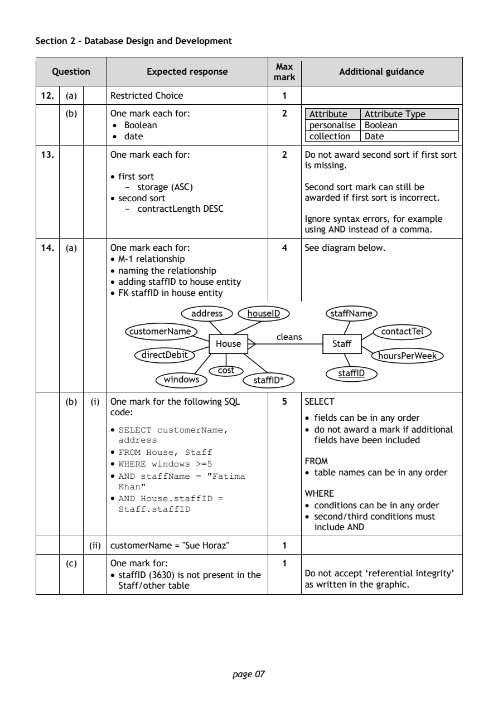
Selectable page text
Section 2 – Database Design and Development
Max
Question Expected response Additional guidance
mark
12. (a) Restricted Choice 1
(b) One mark each for: 2 Attribute Attribute Type
• Boolean personalise Boolean
• date collection Date
13. One mark each for: 2 Do not award second sort if first sort
is missing.
• first sort
storage (ASC) Second sort mark can still be
-
• second sort awarded if first sort is incorrect.
contractLength DESC
-
Ignore syntax errors, for example
using AND instead of a comma.
14. (a) One mark each for: 4 See diagram below.
• M-1 relationship
• naming the relationship
• adding staffID to house entity
• FK staffID in house entity
(b) (i) One mark for the following SQL 5 SELECT
code:
• fields can be in any order
• • do not award a mark if additional
SELECT customerName,
fields have been included
address
•
FROM House, Staff
• FROM
WHERE windows >=5
•
• table names can be in any order
AND staffName = "Fatima
Khan"
WHERE
•
AND House.staffID =
• conditions can be in any order
Staff.staffID
• second/third conditions must
include AND
(ii) customerName = "Sue Horaz" 1
(c) One mark for: 1
• staffID (3630) is not present in the Do not accept ‘referential integrity’
Staff/other table as written in the graphic.
page 07PDF page 8
Question 15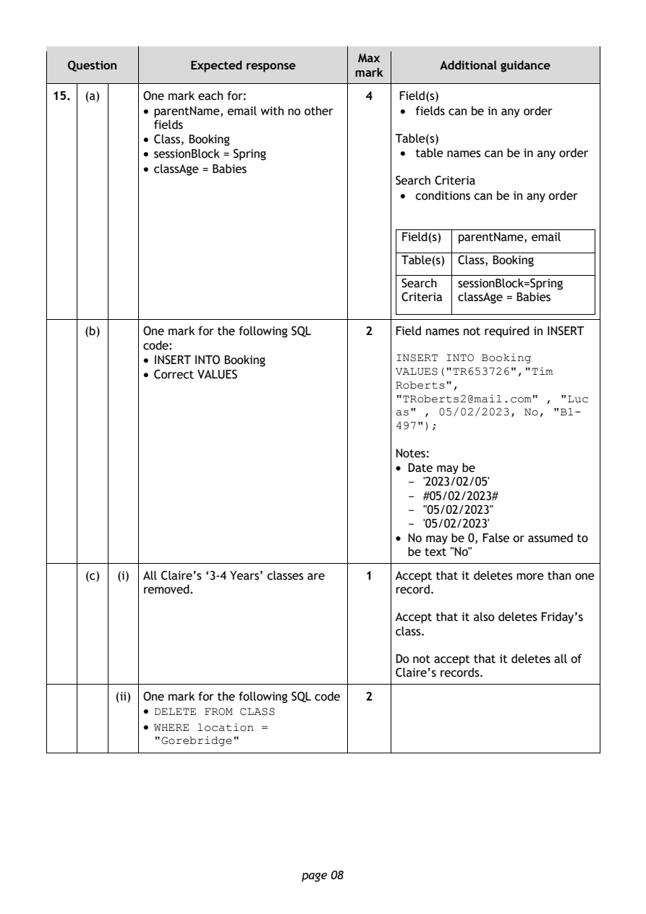
Selectable page text
Max
Question Expected response Additional guidance
mark
15. (a) One mark each for: 4 Field(s)
• parentName, email with no other • fields can be in any order
fields
• Class, Booking Table(s)
• sessionBlock = Spring • table names can be in any order
• classAge = Babies
Search Criteria
• conditions can be in any order
Field(s) parentName, email
Table(s) Class, Booking
Search sessionBlock=Spring
Criteria classAge = Babies
(b) One mark for the following SQL 2 Field names not required in INSERT
code:
• INSERT INTO Booking INSERT INTO Booking
• Correct VALUES VALUES("TR653726","Tim
Roberts",
"TRoberts2@mail.com" , "Luc
as" , 05/02/2023, No, "B1-
497");
Notes:
• Date may be
'2023/02/05'
-
#05/02/2023#
-
"05/02/2023"
-
'05/02/2023'
-
• No may be 0, False or assumed to
be text "No"
(c) (i) All Claire’s ‘3-4 Years’ classes are 1 Accept that it deletes more than one
removed. record.
Accept that it also deletes Friday’s
class.
Do not accept that it deletes all of
Claire’s records.
(ii) One mark for the following SQL code 2
•
DELETE FROM CLASS
•
WHERE location =
"Gorebridge"
page 08PDF page 9
Question 16Question 17Question 18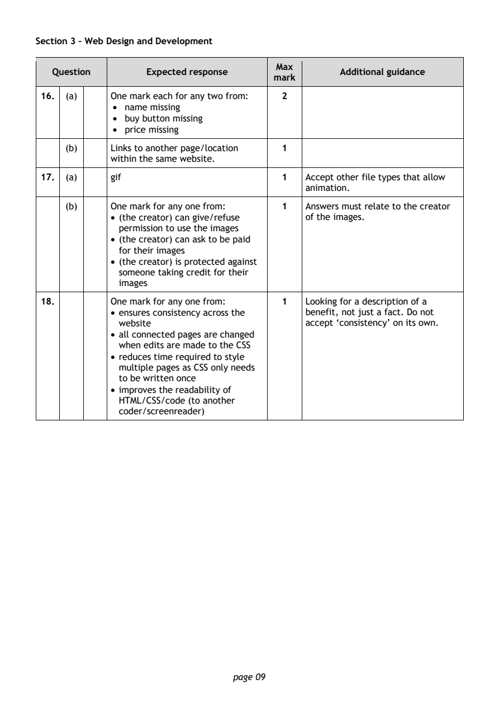
Selectable page text
Section 3 – Web Design and Development
Max
Question Expected response Additional guidance
mark
16. (a) One mark each for any two from: 2
• name missing
• buy button missing
• price missing
(b) Links to another page/location 1
within the same website.
17. (a) gif 1 Accept other file types that allow
animation.
(b) One mark for any one from: 1 Answers must relate to the creator
• (the creator) can give/refuse of the images.
permission to use the images
• (the creator) can ask to be paid
for their images
• (the creator) is protected against
someone taking credit for their
images
18. One mark for any one from: 1 Looking for a description of a
• ensures consistency across the benefit, not just a fact. Do not
website accept ‘consistency’ on its own.
• all connected pages are changed
when edits are made to the CSS
• reduces time required to style
multiple pages as CSS only needs
to be written once
• improves the readability of
HTML/CSS/code (to another
coder/screenreader)
page 09PDF page 10
Question 19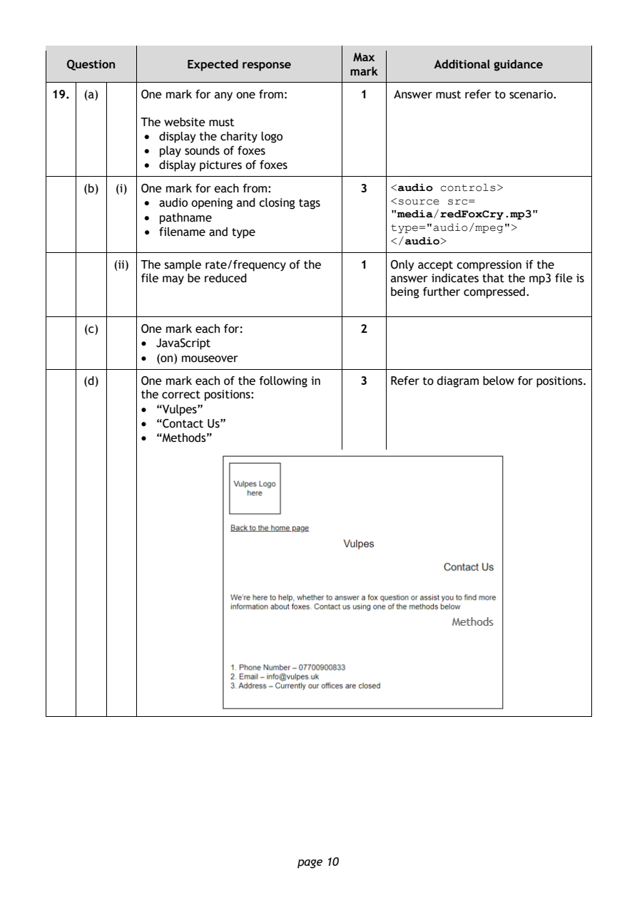
Selectable page text
Max
Question Expected response Additional guidance
mark
19. (a) One mark for any one from: 1 Answer must refer to scenario.
The website must
• display the charity logo
• play sounds of foxes
• display pictures of foxes
(b) (i) One mark for each from: 3
<audio controls>
• audio opening and closing tags <source src=
• pathname "media/redFoxCry.mp3"
• filename and type type="audio/mpeg">
</audio>
(ii) The sample rate/frequency of the 1 Only accept compression if the
file may be reduced answer indicates that the mp3 file is
being further compressed.
(c) One mark each for: 2
• JavaScript
• (on) mouseover
(d) One mark each of the following in 3 Refer to diagram below for positions.
the correct positions:
• “Vulpes”
• “Contact Us”
• “Methods”
page 10PDF page 11
Question 20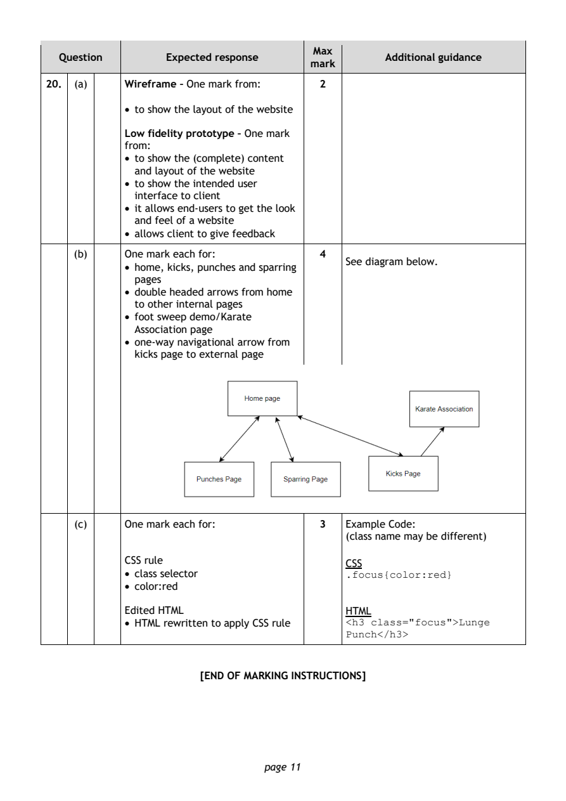
Selectable page text
Max
Question Expected response Additional guidance
mark
20. (a) Wireframe – One mark from: 2
• to show the layout of the website
Low fidelity prototype – One mark
from:
• to show the (complete) content
and layout of the website
• to show the intended user
interface to client
• it allows end-users to get the look
and feel of a website
• allows client to give feedback
(b) One mark each for: 4
See diagram below.
• home, kicks, punches and sparring
pages
• double headed arrows from home
to other internal pages
• foot sweep demo/Karate
Association page
• one-way navigational arrow from
kicks page to external page
(c) One mark each for: 3 Example Code:
(class name may be different)
CSS rule
CSS
• class selector
.focus{color:red}
• color:red
Edited HTML HTML
• HTML rewritten to apply CSS rule
<h3 class="focus">Lunge
Punch</h3>
[END OF MARKING INSTRUCTIONS]
page 11